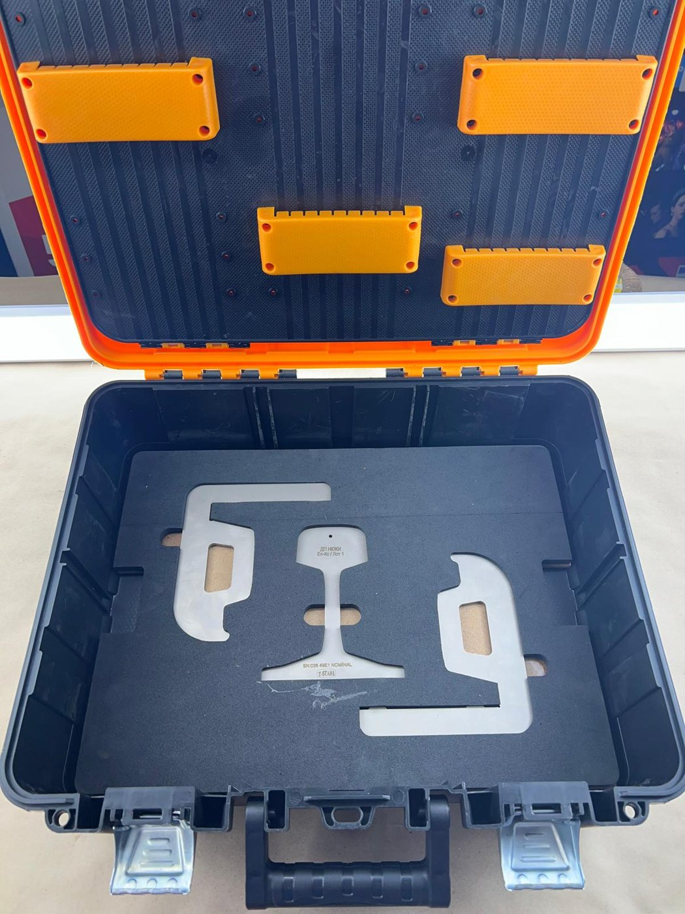
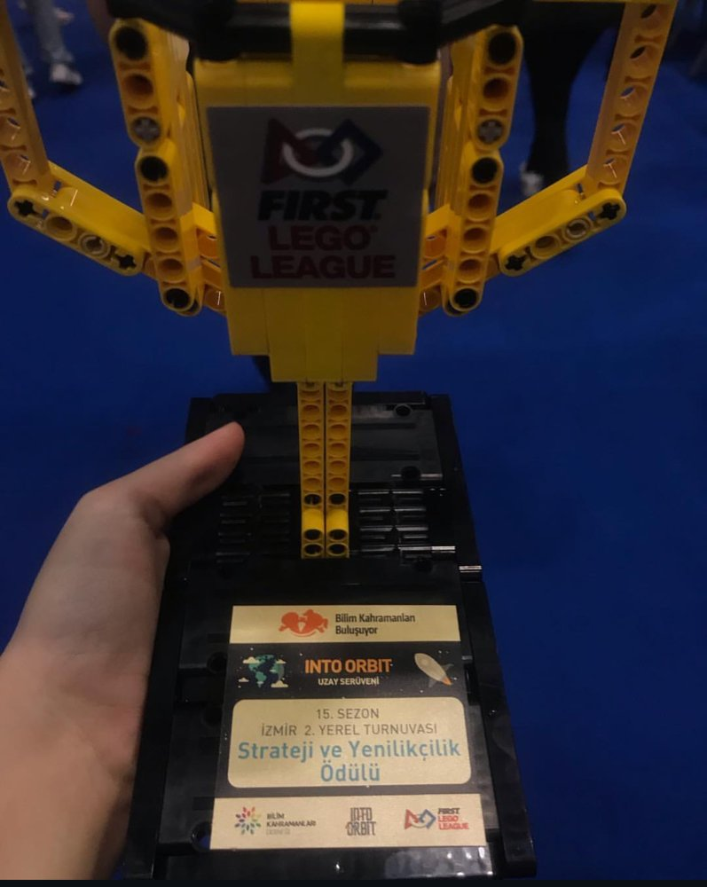

2021 – Present
B.Sc. Mechanical Engineering
Yaşar University, Izmir
I study mechanical engineering and business administration at the same time. For four years I ran an import/export company for measuring instruments, so I work comfortably with both technical design and international trade. I use CAD and simulation tools such as AutoCAD, MATLAB, Simulink, and PVsyst.
Yaşar University, Izmir
Anadolu University
ÖNCEL ÖLÇÜ ALETLERİ İTH. İHR. SAN. VE TİC. A.Ş.

Sourced 49E1 and 60E1 rail profile gauges from China, added branding and serial numbers, calibrated each unit, and supplied them in a custom foam-cut case. Sold through an e-tender in Turkey.

Competed in the 15th season of FIRST LEGO League (Into Orbit) and won the Strategy and Innovation Award at the Izmir 2nd local tournament, February 2019. The videos show our LEGO EV3 robot running the mission mat.
Built a work breakdown structure and schedule in Microsoft Project for preparing a bid to install a security system. The plan runs from the approval to bid to the submitted bid document, in three work packages.